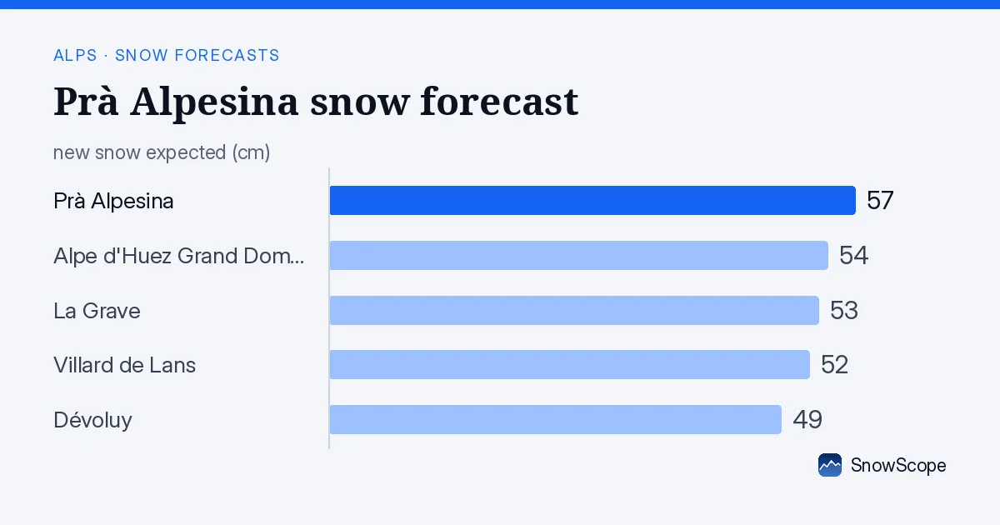

Prà Alpesina snow forecast: 57 cm expected by 26 November (Alps)
Rain or wet snow threatens Prà Alpesina on 25 November when the freezing level climbs to 1,600–2,050 m, above the resort's 1,836 m top. Despite this risk, 57 cm of snow is forecast to fall by 26 November—most of it on 25 November—adding significant water to the mountain pack for spring runoff.
See the live snow forecast for Prà Alpesina in the SnowScope appSnow depth, powder alerts and the 3D map, free.
What is on the ground now
Prà Alpesina sits in a gap in this week's snow cover. At 1,836 m the upper slopes hold 15 cm; lower down at 1,445 m only 4 cm lies on the ground. Among the resorts tracked here, La Grave leads with 166 cm and Alpe d'Huez Grand Domaine has 123 cm, so Prà Alpesina's thin pack makes the coming snow especially important.
Across the region, 107,320 km² of the Alps now has snow cover, with 1,117 of 1,204 resorts sitting in snow-bearing zones. This area has grown sharply from 84,940 km² just two days earlier—a sign that the recent storm (22 November) pushed snow down to lower elevations.
| Resort | Snow depth | New snow, 72 h | Coming, next days | Top |
|---|---|---|---|---|
| Prà Alpesina | 15 cm | 22 cm | 57 cm | 1,836 m |
| Alpe d'Huez Grand Domaine | 123 cm | 106 cm | 54 cm | 3,306 m |
| La Grave | 166 cm | 107 cm | 53 cm | 3,543 m |
| Villard de Lans | 17 cm | 25 cm | 52 cm | 2,055 m |
| Dévoluy | 31 cm | 43 cm | 49 cm | 2,495 m |

When the snow arrives, hour by hour
Tuesday 24 November brings only 1 cm, so patience is needed. The main event is Wednesday 25 November, when 37 cm is forecast to fall. Thursday 26 November adds another 19 cm, though by then much of the story will be written.
Timing is the strongest part of a forecast several days out. Total amounts can shift, so check the map again 48 hours before you travel to Prà Alpesina.
Height decides what stays and what melts
The base at 1,445 m will receive only 21 cm of new snow over the next week, and the freezing level on 25 November (1,600–2,050 m) means wet snow or rain is likely there. The mid-mountain point at 1,640 m fares better with 25 cm forecast; above that, at 1,836 m, 27 cm should accumulate as cold powder.
This height gradient is sharp at Prà Alpesina. Ski the upper slopes for dry snow; lower terrain will be heavier and may consolidate or refrozen overnight. By 26 November the freezing level drops to 1,220–1,960 m, so conditions will reset and stabilize higher on the mountain.
How this season compares
At 1,640 m, Prà Alpesina measures 7 cm today—more than the 4 cm that falls on a typical 23 November. Looking back at 46 past winters, only 14 had less snow on this date, so the resort is ahead of the long-term trend, though still lean by mid-winter standards.
The best snow at Prà Alpesina in past winters has usually arrived in mid-March or late March, so December and January are building months. Each storm now feeds water into spring snowmelt.
Nearby station truth check
Tremalzo, 17 km away at 1,560 m, measured 8 cm on 22 November after adding 8 cm in the previous 24 hours. That exact measurement confirms the recent fall was real but modest—a useful anchor for trusting the forecast higher up at Prà Alpesina's upper elevations, where no station records exist.
The bigger picture: regional snow storage
By 26 November, the Alps will hold snow across 153,340 km² if the forecast holds. That is a 43 per cent jump from today in just three days—a major shift in how much water the mountains are storing. For rivers and reservoirs that feed dry months ahead, this week's precipitation matters. Alpe d'Huez Grand Domaine will add 54 cm and La Grave 53 cm by the same date, so the entire region is gaining snow depth and water storage potential.
Villard de Lans is forecast 52 cm and Dévoluy 49 cm, spreading the benefit across mid-range elevations where lower freezing levels make wet snow more likely but where the sheer volume of precipitation still builds the base.
Tips for skiers
- Start high: on 25 November, ski the upper slopes (above 1,700 m) where snow will fall as dry powder. The lower half of the resort may turn wet or heavy.
- Timing shifts forecasts: check the map again on 23 November evening or 24 November morning to confirm the snow day before you commit to travel.
- First tracks matter most: get on the first lift after Wednesday dawn to ski the new snow before sun and skiers soften it.
- Wet snow can be unstable: before leaving marked slopes or going touring, check the Météo-France BERA avalanche bulletin (Prà Alpesina sits in that zone). The danger level is moderate today but can shift with new loads.
- Pack layers: the freezing level at 2,050 m on 25 November means rain lower down; bring a waterproof shell and expect to strip layers as you climb.
About these numbers
Resort snow depths are the deepest snow on the resort's upper slopes on the date shown; they are estimates for an area, not a measurement at one point. Forecasts can change. Always read the official avalanche bulletin before going off-piste.
Official avalanche bulletins: Météo-France BERA
Cite this report
For research, teaching or the press: the numbers and charts are free to reuse under CC BY 4.0 with this citation.
SnowScope (2026), Prà Alpesina snow forecast: 57 cm expected by 26 November (Alps), https://snowscope.app/blog/en/2026/11/alps-pra-alpesina-snow-forecast-23-november-2026.html, accessed 2026-11-23
SnowScope (Atlas Labs). (2026, November 23). Prà Alpesina snow forecast: 57 cm expected by 26 November (Alps). SnowScope snow reports. https://snowscope.app/blog/en/2026/11/alps-pra-alpesina-snow-forecast-23-november-2026.html
BibTeX
@misc{snowscope2026alpspraalpesinasnowforec,
author = {{SnowScope (Atlas Labs)}},
title = {Prà Alpesina snow forecast: 57 cm expected by 26 November (Alps)},
year = {2026},
month = nov,
howpublished = {\url{https://snowscope.app/blog/en/2026/11/alps-pra-alpesina-snow-forecast-23-november-2026.html}},
note = {Published 2026-11-23 12:29 UTC; accessed 2026-11-23}
}· CC BY 4.0 · Methods, data and tools →
Prà Alpesina: snow and temperature by height, this winter vs last (tools) →
Follow Prà Alpesina
Free: a message when fresh snow is coming, and the forecast every morning.
More snow reports

La Grave's top slopes near 3400 m will collect 49 cm in the week of 23–29 November 2026, with Wednesday 25 as the peak day. Data from 16 November.

What is true about La Grave, the off-piste mountain under La Meije: terrain, safety, snow by month and the trend, from 46 past winters.

Alpe d'Huez faces the sun. How to plan a day by the clock and by height, with the snow of 46 past winters from the low villages to Pic Blanc.